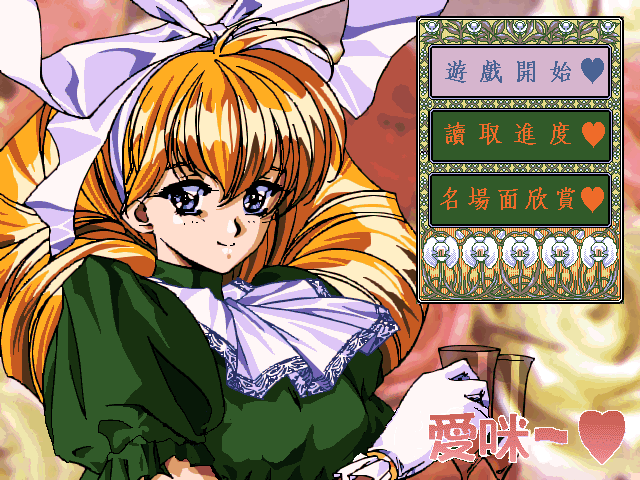
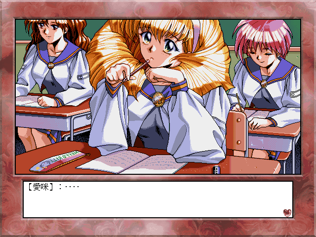

名稱：別叫我愛咪／別叫我艾咪 (Please Don't Call Me Eimmy，中文版) 簡介：C's ware 1998年出品的劇情故事閱讀遊戲，由歡樂盒中文化並代理發行 [待補]。

保護：無，直接在光碟上執行。 限制：由於系統相容性，只能在Win9x系統上執行，否則會當機（目前尚未找到原因）。 修改：Eimmy.exe 1.忽略XP以上系統產生的［midiSteamOut錯誤］ 00 CC CC CC CC CC CC CC CC CC 55 8B EC 81 EC 08 01 00 00 -- -- -- -- -- -- -- -- -- -- C2 08 00 -- -- -- -- -- -- 2.修正XP以上系統文字顯示亂碼的問題 6A 00 68 80 00 00 00 6A 00 (共2個) -- -- -- 88 -- -- -- -- --